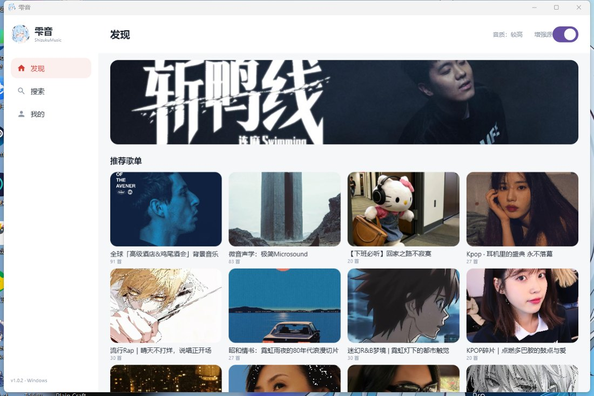
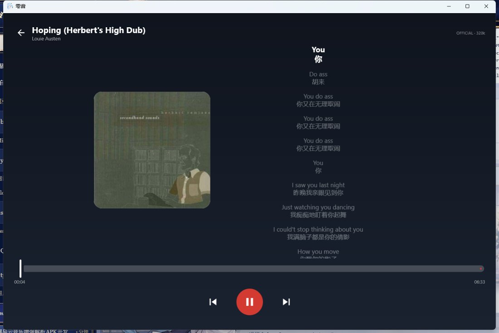
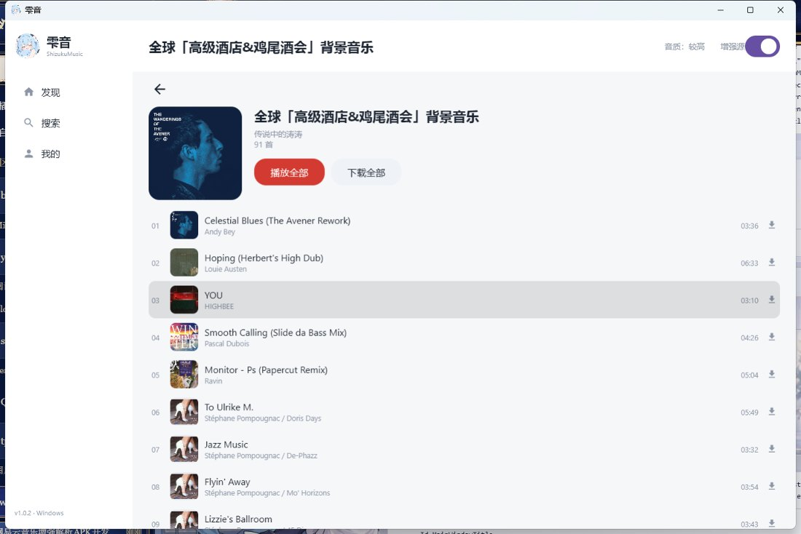
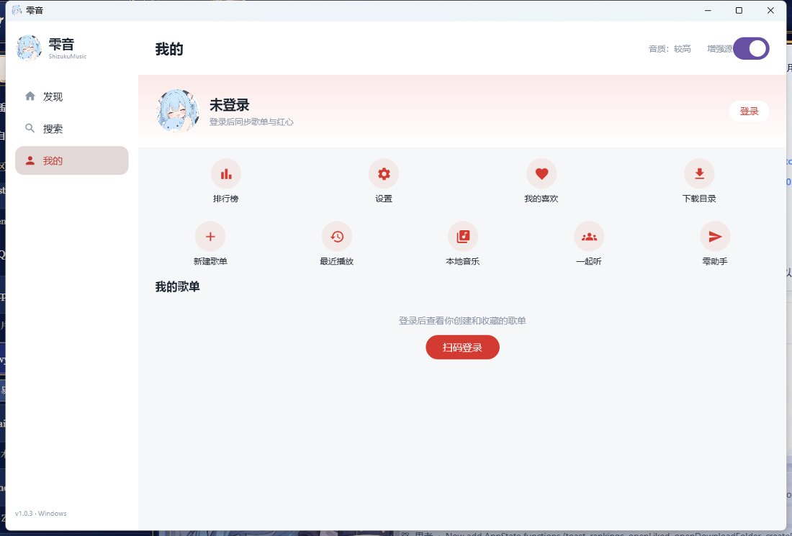
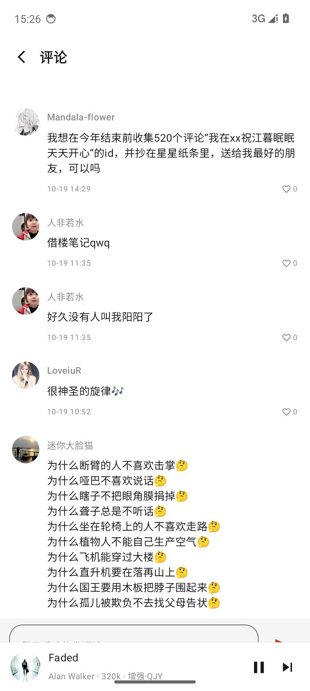
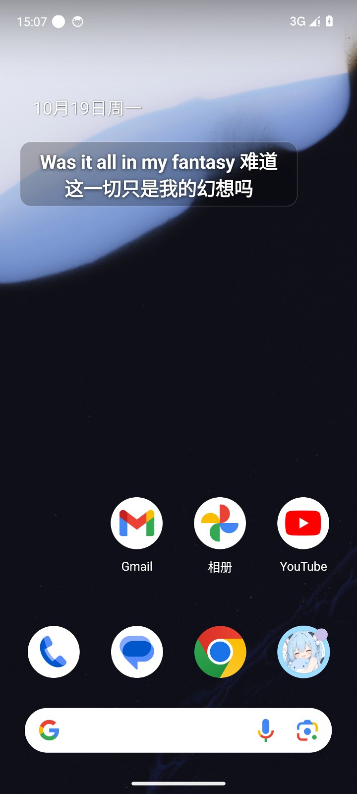
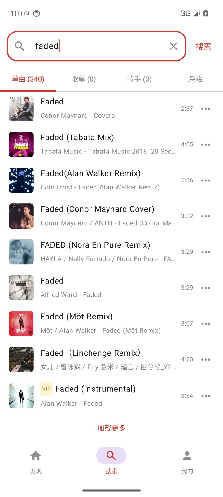
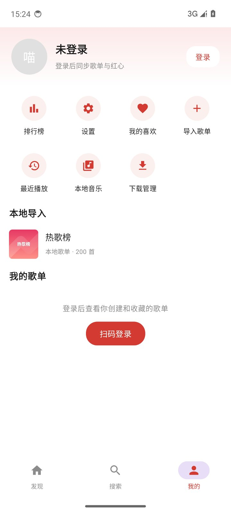

手机上的雫音
APK 直装，Android 8.0+。评论、一起听、悬浮歌词、下载管理、本地音乐全都在。
安卓和 Windows 两个平台同一套直连内核：不经过任何中转，官方只给 128kbps 时自动用增强源补到 320kbps 或无损。还能和朋友一起听、把歌词挂在桌面上、跟 AI 说句话就点歌。

APK 直装，Android 8.0+。评论、一起听、悬浮歌词、下载管理、本地音乐全都在。
ZIP 解压即用，内置运行时不用装 Java。发现、搜索、歌单、播放页、歌词、扫码与网页登录已就绪。
从协议、音源到播放器、歌词与 AI，能自己做的都自己做了。
自实现 weapi / eapi 加密，直连网易云官方接口，没有中转、没有额外服务器。
官方 128kbps 或拿不到链接时，按 GD Studio、七街静夜顺序补齐，最高 320kbps 与无损。
创建官方房间，生成邀请链接；对方点开网页即可唤起 App 进房，同步换歌、进度与播放状态。
安卓悬浮窗、Windows 桌面歌词，颜色字号透明度可调；回到 App 自动隐藏。
歌曲与歌词一起下载，支持暂停与断点续传；播放时边听边存，最多占用 512MB。
扫码 / 网页登录后 Cookie 只保存在本机，用于同步歌单和红心，不上传任何服务器。
与安卓共用网络层和登录态，界面按桌面重排：左边发现、搜索、我的，底部常驻播放条，点开是全屏播放页。



全部来自 App 实际运行，没有重绘。



基于网易云官方一起听房间：一个人建房，另一个人点链接进房，歌曲与进度自动同步。

两个平台都走国内 GitCode 直链，GitHub 作为镜像。无需注册、无需付费。
最近播放（本地记录/清空）与本地音乐（扫描目录、选择目录、播放本地音频）。
自建权限系统（本地存储 / 桌面歌词，设置里可申请与撤销）、本地歌单；退出重开后底部播放条与进度保留。
「我的」页对齐安卓版：粉色渐变头部、快捷入口、我的歌单列表与新建歌单；新增设置页与排行榜页。
系统托盘（播放/暂停/切歌/显示窗口/退出）与桌面歌词悬浮窗，歌词跟随当前行置顶显示。
网页在线登录（自动抓 Cookie）、我的歌单、歌单收藏；发现 / 搜索 / 歌单 / 播放页全套界面。
扫码登录、手动 Cookie 登录，登录态持久化。
通知栏常驻保活、底部播放条冷启动恢复。
修复 AI 助手点歌的 ExoPlayer 线程问题。
内置 AI 助手、跨站源扩展、内部包名统一、横屏登录闪屏修复。